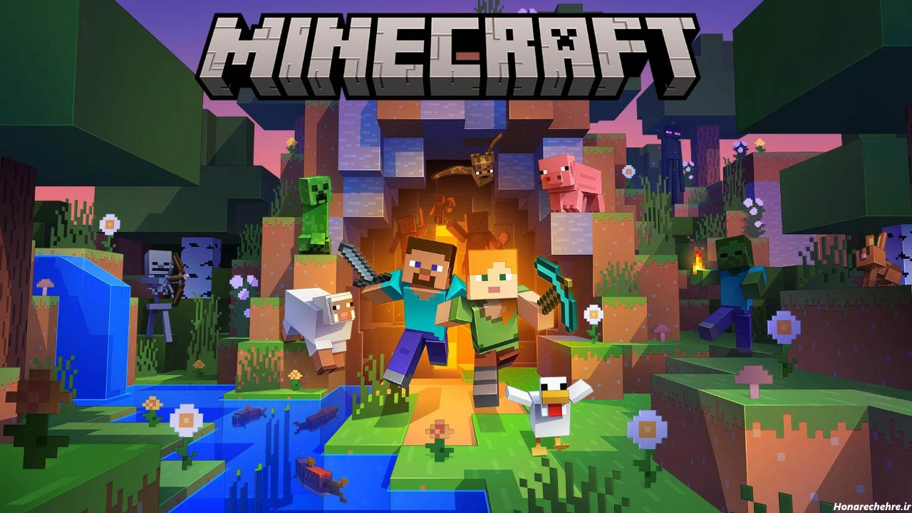
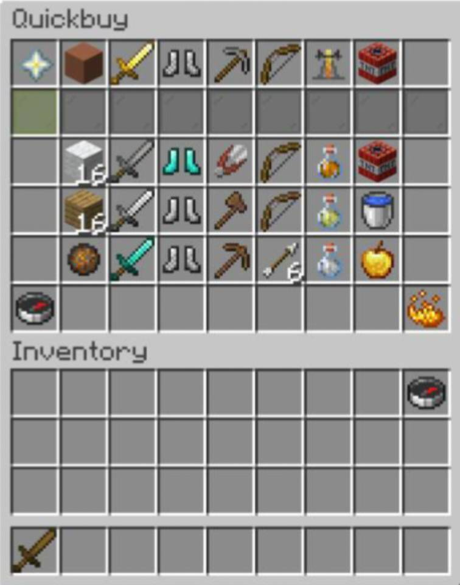
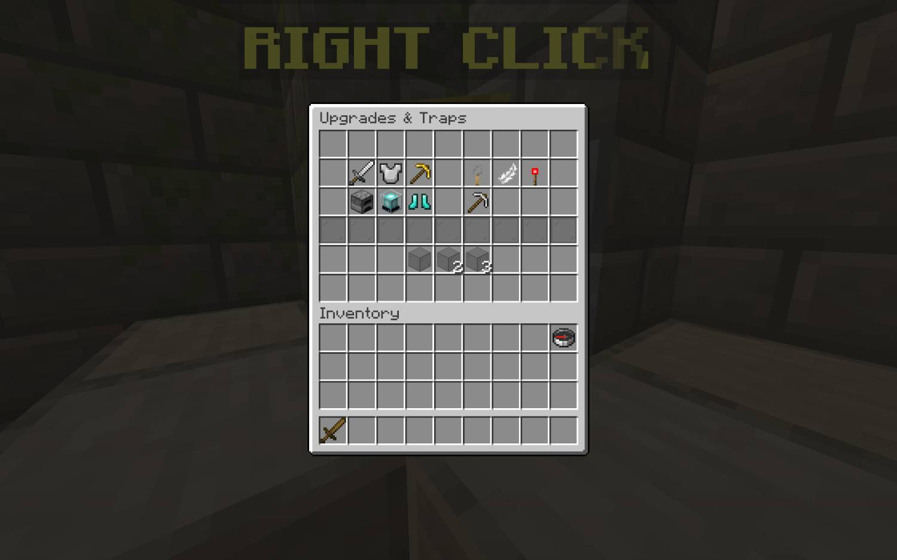

راهنمای کامل بازی بدوارز (BedWars)
برای تازهواردهامعرفی بدوارزبدوارز یکی از محبوبترین مینیگیمهای ماینکرفت است
که ترکیبی از نبرد، استراتژی، سرعت عمل و مدیریت منابع را در قالب یک بازی تیمی ارائه میدهد.

هدف اصلی ساده است:
از تخت خود محافظت کنید و تخت تیمهای دیگر را نابود کنید.
تا زمانی که تخت شما سالم باشد، حتی اگر کشته شوید دوباره زنده میشوید؛
اما اگر تخت نابود شود، مرگ بعدی شما آخرین مرگ خواهد بود.
ساختار کلی بازی
.jpg)
هر بازی معمولاً شامل موارد زیر است:
چندین تیم (معمولاً ۲ تا ۴ نفر، در برخی مودها ۱نفره)
یک جزیره اختصاصی برای هر تیم
منابع تولیدی (آهن و طلا) روی جزیره
جزایر میانی که منابع پیشرفتهتری مثل زمرد و الماس تولید میکنند
فروشگاهی که با منابع میتوانید آیتم بخرید
منابع (Resources)

شناخت منابع اولین قدم مهم برای پیشرفت است.
1. آهن (Iron)
سریعترین منبع تولیدی. مناسب خرید:
بلوک
شمشیر سنگی
ابزارهای اولیه
2. طلا (Gold)
نایابتر از آهن، مناسب خرید:
شمشیر آهنی
زره
تیر و کمان
بلوکهای مقاوم مثل چوب
3. الماس (Diamond)
از جزیرههای دورتر جمع میشود. برای:

ارتقای زرهها و شمشیرها
بهبود سرعت جمعآوری منابع کل تیم
4. زمرد (Emerald)
ارزشمندترین منبع. برای:
خرید زره الماسی
اندِرپرل
شمشیر الماسی
آیتمهای تاکتیکی ویژه
.jpg)
مهمترین فازهای بازی
فاز 1: شروع بازی (Early Game)
سریع بلوک بخرید و تخت را حداقل یک لایه محافظت کنید. یکی از اعضای تیم به جمعآوری منابع در میانه برود.
حمله سریع به تیمهای نزدیک میتواند نتیجهبخش باشد.
نکته مهم: اوج خطر بازی در ۳۰ ثانیه اول است.
با یک دفاع ساده، ۷۰٪ حملات سریع دفع میشوند.
.jpg)
فاز ۲: میانه بازی (Mid Game)
الماسها و زمردها اینجا مهم میشوند.
کارهای پیشنهادی:
ارتقای ژنراتورها (بهویژه Sharpness و Protection)
جمعآوری زمرد برای زره قوی
حملههای تاکتیکی با ابزار مثل Fireball یا TNT
ساخت دفاع چندلایه: ترکیب پیشنهادی: چوب + خاک رس سختشده + پشم + شیشه انفجاری
.jpg)
فاز ۳: پایان بازی (Late Game)
اگر تخت نابود شده، حالت بازی شما «مرگ دائمی» است.
اقدامات:
از نبردهای بیهدف پرهیز کنید
با Ender Pearl به تیمهای باقیمانده حمله کنید
بهبود زره و خرید طلسمها (از طریق الماس)
.jpg)
(بهترین استراتژی ها برای تازه کارها)
1. همیشه اول دفاع، بعد حمله
دفاع یکلایه ضعیف، دلیل اصلی باخت سریع تیمهاست.
2. استفاده از ابزارها
حتی یک Pickaxe ساده میتواند سرنوشت نبرد را تغییر دهد.
3. حرفهای شدن در پل ساختن (Bridging)
چند مدل پلزدن:
Normal Bridging (برای مبتدیها)
Speed Bridging (برای پیشرفتهترها)
Ninja Bridging (بسیار سریع – سطح حرفهای)
هر چه بهتر پل بزنید، سریعتر به منابع ارزشمند میرسید.
.jpg)
هیچچیز مرگبارتر از حمله ناگهانی از پشت نیست.
از F5 استفاده کنید تا دید گستردهتر داشته باشید.
5. مدیریت منابع
منابع گرانقیمت را بیدلیل خرج نکنید. اولویتها:
زره → ابزار → شمشیر → آیتمهای تاکتیکی
6. استفاده از تاکتیکهای خاص
Fireball Jumping برای پرشهای بلند
TNT Jumping برای رسیدن ناگهانی به دفاع دشمن
Block Trapping برای انداختن دشمن از پل
.jpg)
اشتباهات رایج تازهکارها
حمله بدون ابزار مناسب
ندادن لایه دفاعی به تخت
جمعکردن زمرد و سپس مرگ قبل از استفاده از آن
پلزدن بدون نگاهکردن به اطراف
جنگیدن بدون زره مناسب
.jpg)
نکاتی برای حرفهای شدن
زمانبندی حملات را با همتیمیها هماهنگ کنید
مسیرهای جدید برای حمله بسازید تا دشمن غافلگیر شود
از آیتمهای Utility مثل Trap استفاده کنید
همیشه به فکر جمعآوری الماس برای ارتقاهای تیم باشید